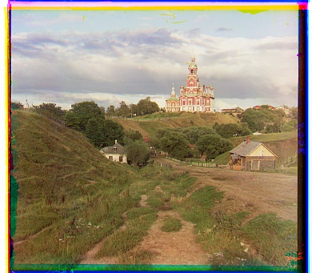
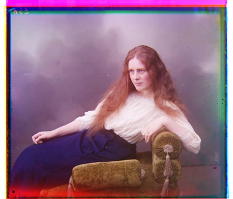
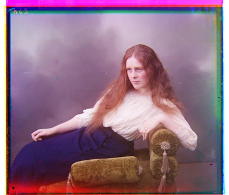
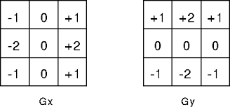
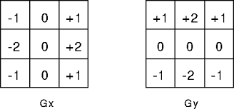

Overview
In the early 20th century, photographer Sergey Mikhaylovich Prokudin-Gorskii travelled Russia in a railway-car darkroom provided by Emperor Nicholas II, using a black and white camera and three color filters to catalogue the many features of Russia.
In this project, using his black and white photos, we create color compositions that combine the information in each of the three photos he took to create a color representation of the subjects.
Process
Our goal is to inspect compositions of 3 images which were taken from top to bottom with blue, green, and red filters respectively, and overlay them to create a colorized image.
To do this, we split the original image into three equal parts, representing the blue, green, and red images respectively.
From here, we can estimate the relative real position of the three parts using an image scoring metric to find the best offsets to overlay each image on top of each other.
However, for large images, searching the entirety of each image for the best possible offset may involve searching millions of pixels and running an expensive metric on each one. Therefore we use image pyramids:
Each input image is repeatedly run through a Gaussian filter and downsampled by a factor of 2 to obtain a smaller image that keeps roughly the same low-frequency patterns.
It doesn't take very long to run an image similarity metric like Normalized Cross-Correlation of the brightnesses of each third of the subsection on the entirety of the smallest image in this pyramid to get an estimate of the correct offset for each color.
We can use this best-scoring offset to guess the best offset for the image that is up one level in the pyramid, and we can confine our search to a small region around our predicted best offset.
Repeating this procdure throughout the larger levels of the pyramid, we can find the best offset for large images according to NCC in less than 10 seconds.

 

Bells and Whistles: Align Emir and Auto-Crop
Using the NCC to correlate based on pixel brightness and then overlaying creates mysterious colored bars at the borders of the image, and even worse, can generate the wrong result when
two of the black/white sections have very different color densities. For example, the picture of the Emir confounds our NCC algorithm:
This makes some sense: the vivid color in the center of the image contains high blue density but not very much red, and so our algorithm decides the best location for the robe in our red image
is definitely not the same location as the location of the blue robe in the blue image.
To combat this, we can instead detect locations in each third where there are sudden changes in color intensity, or edges, with the Sobel filter, and then use NCC to decide the best offset based on the location of these edges.
The Sobel filter is a pair of two convolutions which detect sudden x-changes and sudden y-changes in the values of a matrix.

In the image above, the Gx filter detects sudden changes in the x-direction, so vertical edges. A vertical edge will have a high magnitude after going through this filter because values on one side are drastically different from the other.
Likewise, the Gy filter detects sudden changes in the y-direction, or horizontal edges.
The Sobel filter values can be calculated with np.sqrt(Gx ** 2 + Gy**2) where Gx and Gy represent the results of convolution with the Gx and Gy filters respectively.
We run each level of the Gaussian pyramid generated in the previous step through our Sobel filter and obtain a new image pyramid representing the edges in each level of the pyramid
Within our new image pyramid, we run the same NCC pyramid search looking for the best offsets as before, and obtain better results:
However, there are still a few unsightly colored bars at the edges of our image.
We can try to remove them again using the Sobel filter to detect edges. We find the inward-most rows and columns with median value after the sobel filter that is higher than a certain threshold for any color frequency.
These are likely to be strong, uniformly colored edges in our image, like the bars that we want to crop out. Therefore, we crop from the border of the image up to these rows/columns.
The result has less distraction at the periphery, although something like writing in white on the film border can still confuse it:
After applying the edge filtering procedure to all the images from the sample dataset, and three other images from the Prokudin-Gorskii collection, we get the results, time, and offsets (y, x) shown in the gallery at the top of the page.

In the image above, the Gx filter detects sudden changes in the x-direction, so vertical edges. A vertical edge will have a high magnitude after going through this filter because values on one side are drastically different from the other.
Likewise, the Gy filter detects sudden changes in the y-direction, or horizontal edges.
The Sobel filter values can be calculated with np.sqrt(Gx ** 2 + Gy**2) where Gx and Gy represent the results of convolution with the Gx and Gy filters respectively.
We run each level of the Gaussian pyramid generated in the previous step through our Sobel filter and obtain a new image pyramid representing the edges in each level of the pyramid
Within our new image pyramid, we run the same NCC pyramid search looking for the best offsets as before, and obtain better results:
However, there are still a few unsightly colored bars at the edges of our image.
We can try to remove them again using the Sobel filter to detect edges. We find the inward-most rows and columns with median value after the sobel filter that is higher than a certain threshold for any color frequency. These are likely to be strong, uniformly colored edges in our image, like the bars that we want to crop out. Therefore, we crop from the border of the image up to these rows/columns.
The result has less distraction at the periphery, although something like writing in white on the film border can still confuse it:
After applying the edge filtering procedure to all the images from the sample dataset, and three other images from the Prokudin-Gorskii collection, we get the results, time, and offsets (y, x) shown in the gallery at the top of the page.